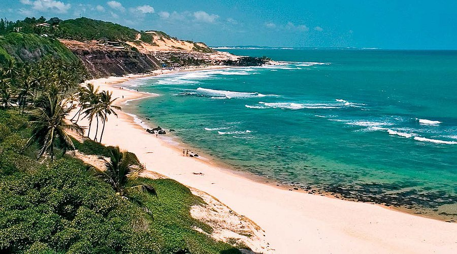
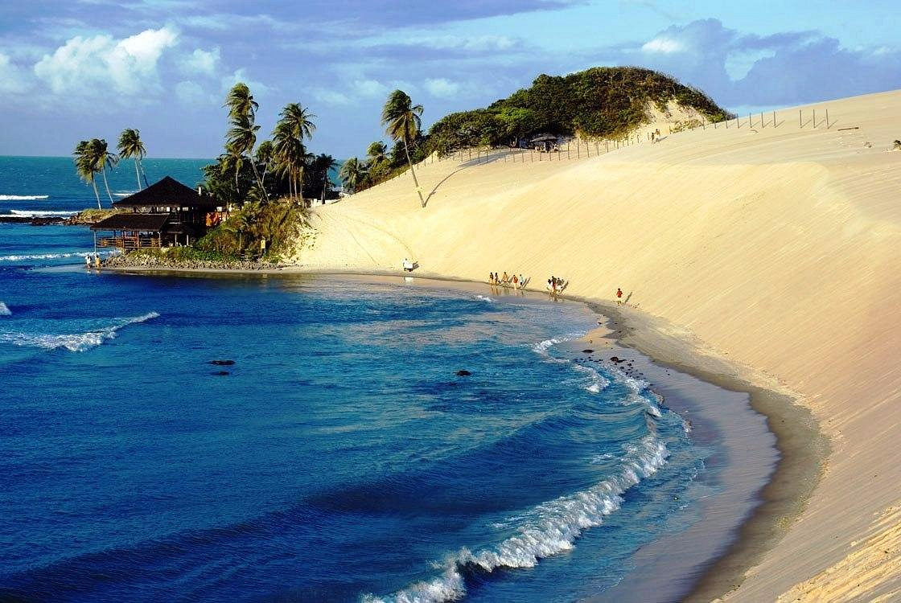
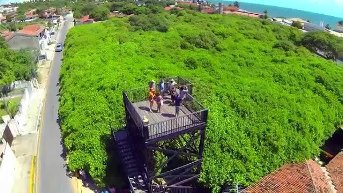
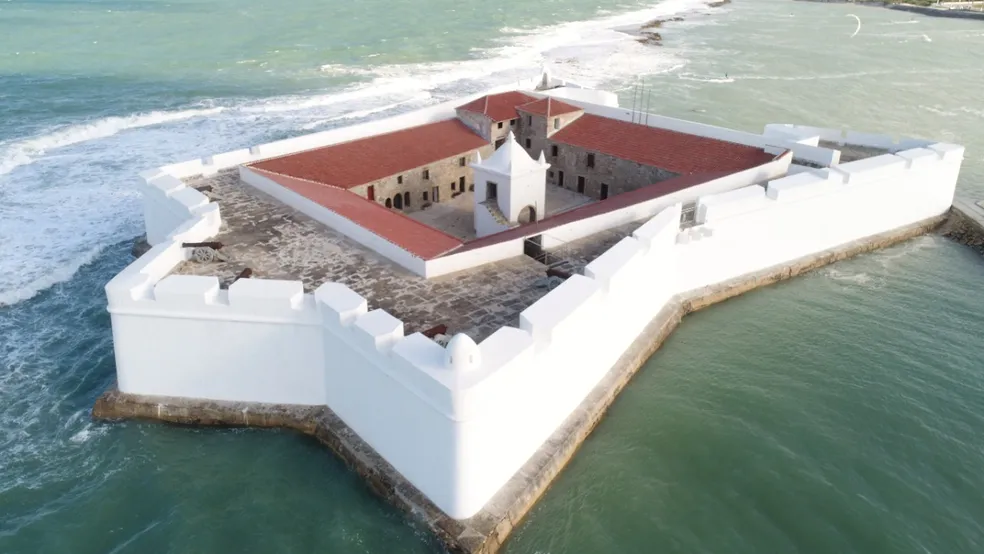
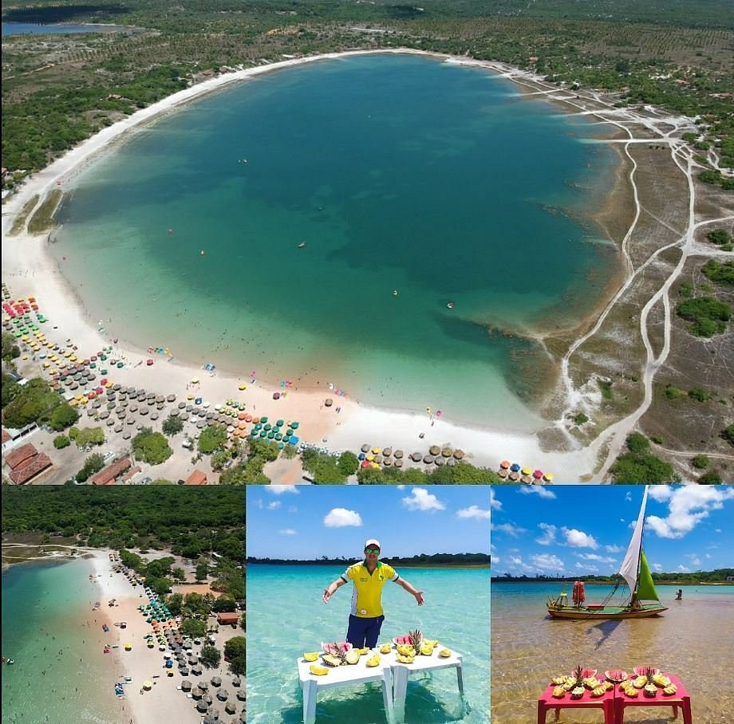

Praia da Pipa
Uma das praias mais famosas do Brasil, com falésias, golfinhos e águas cristalinas. Localizada em Tibau do Sul.
Dunas de Genipabu
Cartão-postal do estado, com passeios de buggy e dromedário. Fica no município de Extremoz, próximo a Natal.
Maior Cajueiro do Mundo
Localizado em Pirangi do Norte, o cajueiro cobre mais de 8.500 m² e é uma atração única no mundo.
Forte dos Reis Magos
Construção histórica de 1598, marco da fundação de Natal, com vista para o encontro do rio Potengi com o mar.
Lagoa do Carcará
Águas cristalinas e areia branca fazem dessa lagoa um dos destinos mais paradisíacos do litoral sul potiguar.